资源
- GAMES104-现代游戏引擎：从入门到实践_哔哩哔哩_bilibili
- GAMES104 - 现代游戏引擎入门必修课 (boomingtech.com)
- Piccolo 社区 - 游戏引擎爱好者的新家园 (piccoloengine.com)
- BoomingTech/Piccolo: Piccolo (formerly Pilot) – mini game engine for games104 (github.com)
- GAMES104：现代游戏引擎，从理论到实践 - 知乎 (zhihu.com)
课程
第二十节：现代游戏引擎架构：面向数据编程与任务系统
Code Execution Is Not As Simple As It Looks
代码执行并不像看起来那么简单
Code is executed on top of specific hardware and operating system
代码在特定硬件和操作系统上执行
-
Hardware and OS must be considered if we want to write a high performance program
如果我们想编写高性能程序，就必须考虑硬件和操作系统
{kind=link}
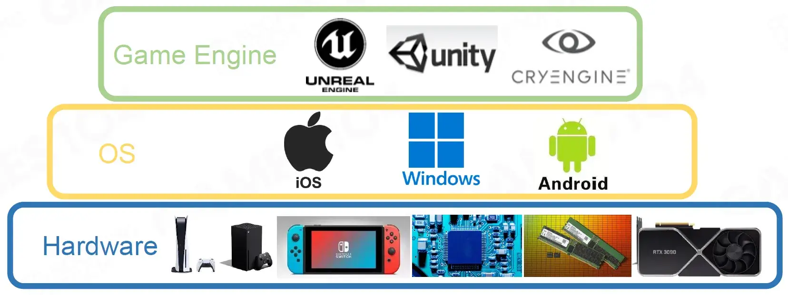
Basics of Parallel Programming
并行程序设计基础
Ceiling of Moore's Law and Multi-Cores
摩尔定律的上限与多核
-
The number of transistors in a dense integrated circuit (IC) doubles about every two years
密集集成电路（IC）中的晶体管数量大约每两年翻一番
-
In these years, chip densities are no longerdoubling every two years
这些年来，芯片密度不再每两年翻一番
-
Multi-coreprocessorbecomes the new industry trend
多核处理器成为新的行业趋势
{kind=link}
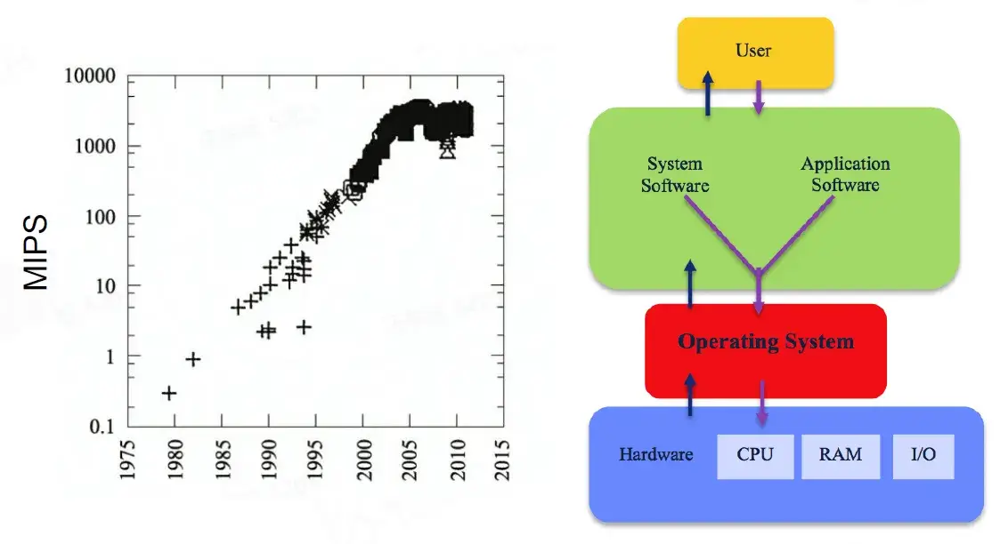
处理器的精度和频率的提升达到了一个瓶颈，添加更多核心成为提升处理器性能的一个趋势。
Process and Thread
进程和线程
{% div subfields %}
{% div subfield %}
Process
进程
-
The instance of an application (or program)
应用程序（或程序）的实例
-
Has its own individual region of memory
有自己的内存空间
{% enddiv %}
{% div subfield %}
Thread
线程
-
Preemptive multitasking
先发制人的多任务处理
-
The smallest unit of task that can be scheduled by OS
操作系统可以调度的最小任务单元
-
Must reside in a process
必须驻留在进程中
-
Threads in the same process share the same region of memory
同一进程中的线程共享同一内存区域（处理不好容易出 bug）
{% enddiv %}
{% enddiv %}
{kind=link}
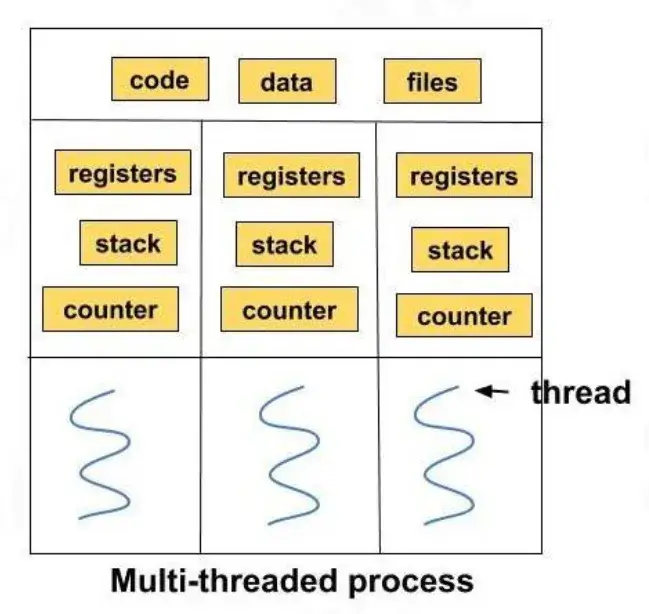
Types of Multitasking
多任务处理的类型
{% div subfields %}
{% div subfield %}
{kind=link}
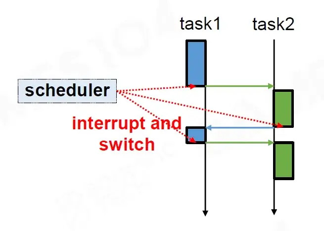
Preemptive Multitasking
先发制人的多任务处理
-
Currently executing task can be interrupted at a time decided by the scheduler
当前正在执行的任务可以在调度程序决定的时间中断
-
Scheduler determines which task to be executed next
调度器确定下一个要执行的任务
-
Applied in most operating systems
适用于大多数操作系统
{% enddiv %}
{% div subfield %}
{kind=link}
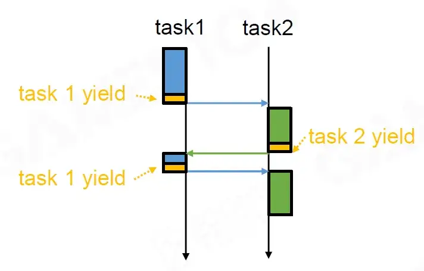
Non-preemptive Multitasking
非抢占式多任务处理
-
Tasks must be explicitly programmed to yield control
任务必须明确编程以实现控制
-
Tasksmust cooperate for the scheduling scheme to work
任务必须配合调度方案才能发挥作用
-
Currently many real-time operating systems (RTOS) also support this kind of scheduling
目前，许多实时操作系统（RTOS）也支持这种调度
{% enddiv %}
{% enddiv %}
Thread Context Switch
线程上下文切换
Store the state of a thread and resume the execution at a later point
存储线程的状态，并在稍后恢复执行
-
State including registers, stack and other OS required data
状态，包括寄存器、堆栈和其他操作系统所需的数据
-
Thread context switch implies extra user-kernel mode switch
线程上下文切换意味着额外的用户内核模式切换
-
Cache invalidation after context switch has even more cost
上下文切换后缓存失效的成本更高
{kind=link}
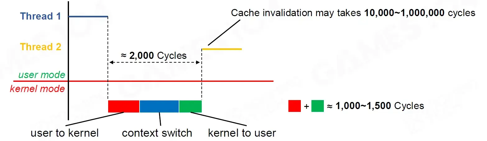
Cache invalidation may takes 10,000~1,000,000 cycles
缓存失效可能需要 10000~1000000 个周期
Parallel Problems in Parallel Computing
并行计算中的并行问题
Embarrassingly Parallel Problem (or Perfectly Parallel)
易并行计算问题（或完全平行问题）
-
Little or no dependency or need for communication between parallel tasks
并行任务之间很少或不需要通信
{kind=link}
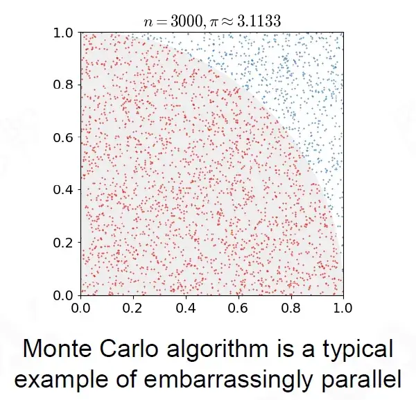
Monte Carlo algorithm is a typical example of embarrassingly parallel
蒙特卡洛算法是易并行计算问题的典型例子（使用多线程计算蒙特卡洛积分）
Non-embarrassingly Parallel Problem
非尴尬的平行问题
-
Communication is needed between parallel tasks
并行任务之间需要通信
{kind=link}
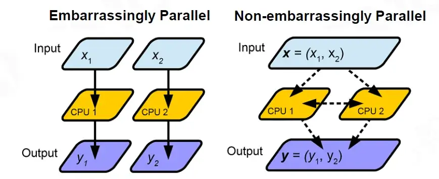
Data Race in Parallel Programming
并行编程中的数据竞争
Multiple threads in a single process access the same memory location concurrently
单个进程中的多个线程同时访问同一内存位置
-
Atleast one of the accesses is for writing
至少有一个入口是用于写作的
while(job_count < 100) {
doSomething();
job_count++;
}-
Read job_count
读取 job_count
-
Compute job_count +1
计算任务计数 +1
-
Write new job_count
写新任务计数
{kind=link}
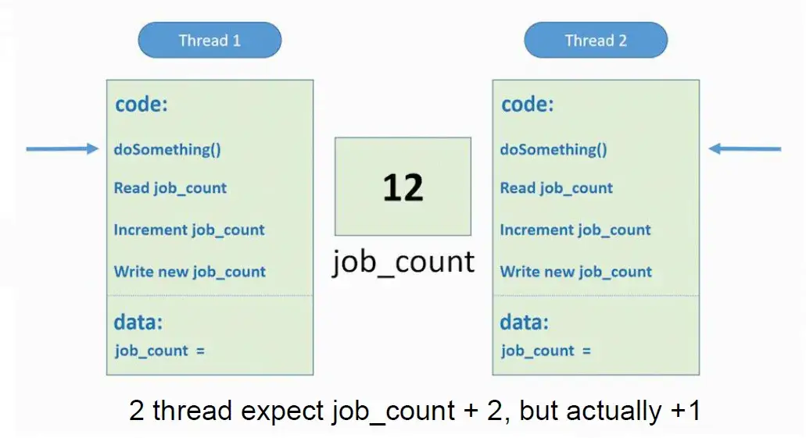
Blocking Algorithm -Locking Primitives
阻塞算法-上锁
Lock
锁
-
Only one thread can acquire the lock at a time
一次只能有一个线程获取锁
-
Make a critical sectionfor shared resource access
创建共享资源访问的关键部分
{kind=link}
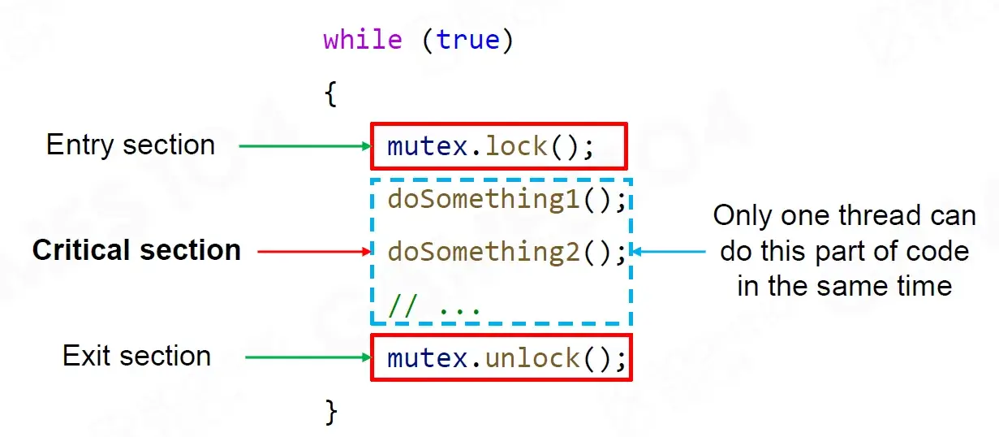
Only one thread can do this part of code in the same time
只有一个线程可以同时执行这部分代码
Other Issues with Locks
锁的其他问题
-
Thread suspending and resuming will bring performance overhead
线程挂起和恢复将带来性能开销
-
Suspending threads never get resumed if the thread that acquires the lock exits abnormally
如果获取锁的线程异常退出，则挂起的线程永远不会恢复
-
Priority Inversion
优先级反转
-
A higher priority task attempts to acquire the lock that is already acquired by a lower priority task
较高优先级的任务试图获取较低优先级任务已经获取的锁
-
{kind=link}
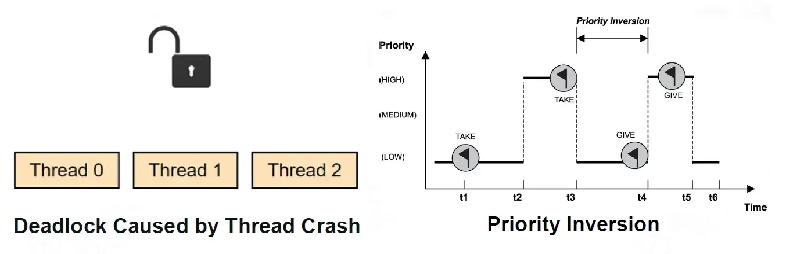
Atomic Operation : Lock-free Programming
原子操作：无锁编程
Atomic Loads and Stores
原子负载和存储
-
Load: Load data from shared memory to either a register or thread-specific memory
加载：将数据从共享内存加载到寄存器或线程特定内存
-
Store: Move data into shared memory
存储：将数据移动到共享内存中
Atomic Read-Modify-Write (RMW)
原子读修改写（RMW）
-
Test and Set: Set 1 to shared memory and return the previous value
测试和设置：将 1 设置为共享内存并返回上一个值
-
CompareandSwap (CAS): Update the data in shared memory if it equals an expected value
比较和交换（CAS）：如果共享内存中的数据等于预期值，则更新该数据
-
Fetch and Add: Add a value to the data in shared memory and return the previous value
提取并添加：向共享内存中的数据添加一个值，并返回上一个值
-
...
{kind=link}
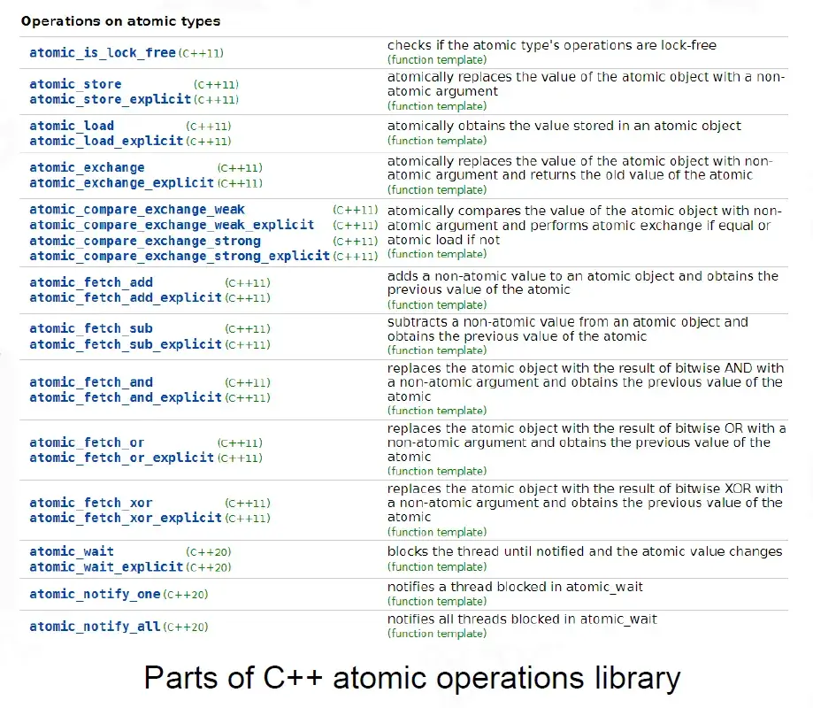
C++11 和 C++20 提供了原子操作的语句。
Lock Free vs. Wait Free
{kind=link}
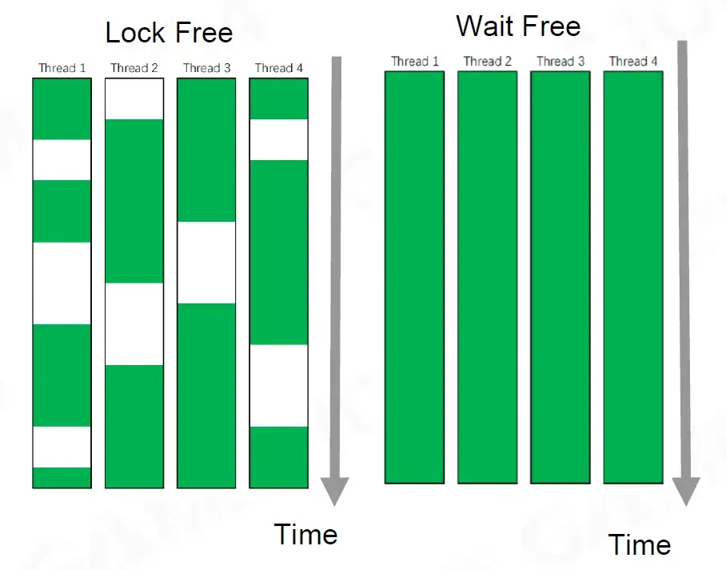
-
wait-free：不管 OS 如何调度线程，每个线程始终在做有用的事情。
-
lock-free：不管 OS 如何调度线程，至少有一个线程在做有用的事情。
Compiler Reordering Optimizations
编译器重新排序优化
{kind=link}
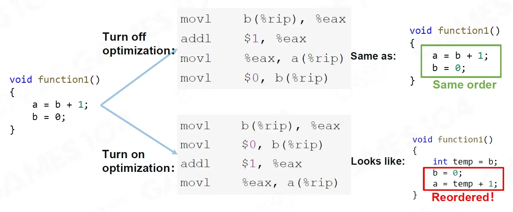
编译器将高级语言汇编成汇编语言时，有可能进行优化操作修改代码的执行顺序，这在单线程中不会有变化，但在多线程中可能出现奇怪情况。
Problem of Memory Reordering
内存重新排序问题
-
Compilers and CPUs often modify the execution order of instructions to optimize performance
编译器和 CPU 经常修改指令的执行顺序以优化性能
-
It's the hard part of parallel programming
这是并行编程的难点
{kind=link}
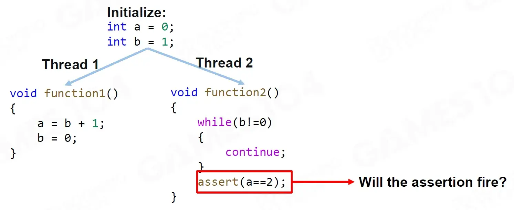
assert是 C/C++ 中的一个宏，用于在运行时检查一个条件是否为真。如果条件不满足，则运行时将终止程序的执行并输出一条错误信息。
如果 Thread 1 进行了编译器优化，则 Thread 2 可能不会在 assert(a==2); 处抛出错误。
Out-of-order Execution by CPUs
CPU 执行顺序错误
For different CPU
适用于不同的 CPU
-
The optimization strategy are significantly different
优化策略明显不同
-
Provides different types of memory order guarantees
提供不同类型的内存顺序保证
-
Parallel programs require different processing
并行程序需要不同的处理
{kind=link}
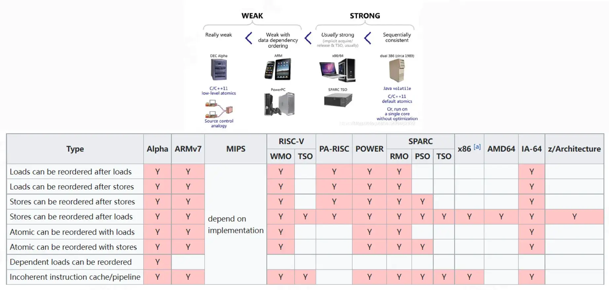
有些 CPU 不保证执行顺序。导致有些代码在平台 A 运行正常，但在平台 B 运行异常。
Parallel Framework of Game Engine
游戏引擎的并行框架
Fixed Multi-thread
固定多线程
One fixed thread for each part of the game engine logic
游戏引擎逻辑的每个部分都有一个固定线程
-
Render, Simulation, Logic, Network, and etc.
渲染、模拟、逻辑、网络等
-
Easy to implement
易于实施
{kind=link}
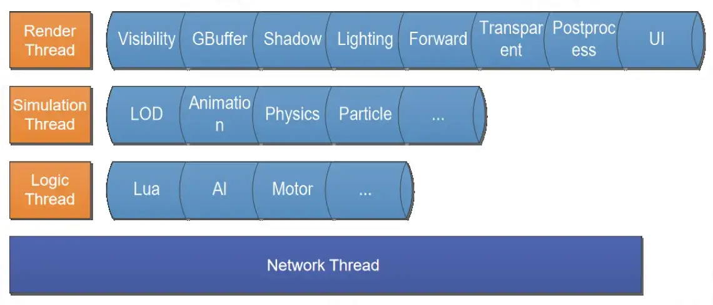
Issues with Fixed Multi-thread
已修复的多线程问题
-
The workload is unbalanced among threads (cores)
线程（核心）之间的工作负载不平衡
-
Unscalable while there are more processor cores
当有更多处理器内核时，无法缩放
{kind=link}
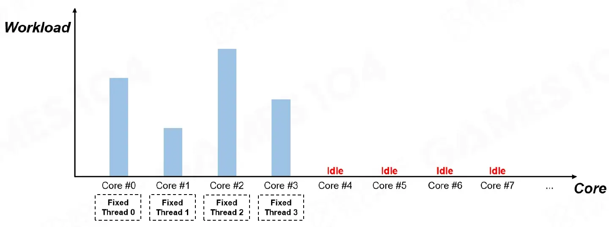
还是容易出现其它核心陪跑的情况。
Thread Fork-Join
螺纹叉连接
Fork-join for data-parallelizable work (based on fixed multi-thread)
用于数据并行工作的分叉连接（基于固定多线程）
-
Use a thread pool to prevent frequent thread creation/destruction
使用线程池来防止频繁的线程创建/销毁
{kind=link}
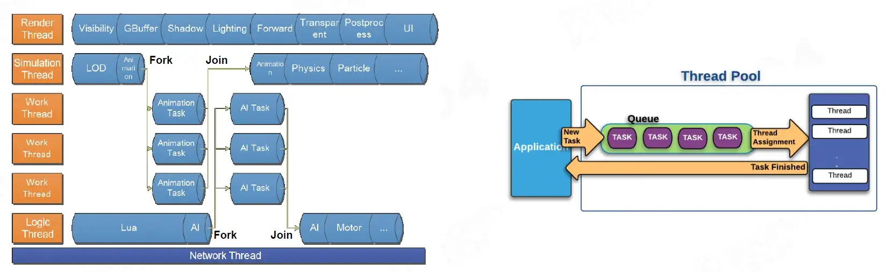
Problems with Thread Fork-Join
螺纹叉连接问题
-
Not easy for logic programmers (work split, work threads count)
逻辑程序员不容易（工作拆分、工作线程计数）
-
Too many threads can bring performance overhead on context switch
太多的线程会给上下文切换带来性能开销
-
The workload is still unbalanced among threads (cores)
线程（核心）之间的工作负载仍然不平衡
{kind=link}
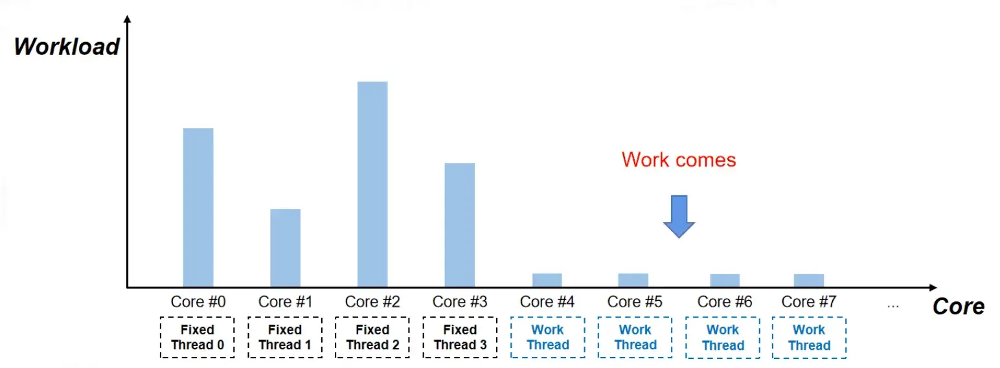
Unreal Parallel framework
虚幻并行框架
Two types of threads
两种类型的螺纹
-
Named Thread
命名线程
-
Created by other systems and attached to parallel framework
由其他系统创建并附加到并行框架
-
-
Worker Thread
工人线程
-
Three priorities: high, middle and low
三个优先事项：高、中、低
-
The number is determined by the number of CPU cores
该数量由 CPU 内核的数量决定
-
{kind=link}
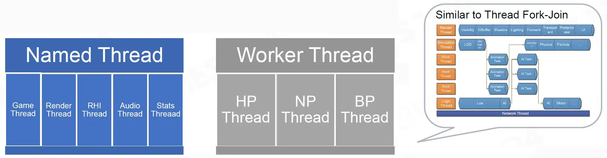
Taskgraph
任务图
A directed acyclic graph
有向无环图
-
Node→Task
节点→任务
-
Edge→Dependency
边缘→依赖
{kind=link}
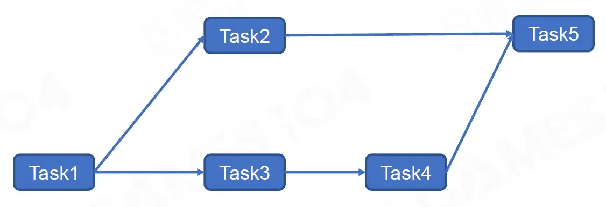
Building Task Graph by Links
通过链接构建任务图
{kind=link}
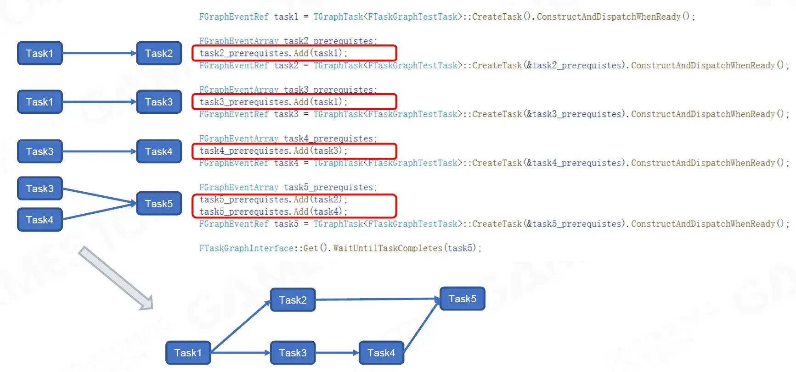
Job System
任务系统
Coroutine
协程
Allows for multitaskingby creating jobs that run inside of coroutines
通过创建在协程内运行的任务，允许多任务处理
-
Coroutine is a lightweight execution context (include a user provided stack, registers...)
协程是一个轻量级的执行上下文（包括用户提供的堆栈、寄存器等）
-
Execution is collaborative, means a coroutine can switch to another interactively
执行是协作的，意味着协程可以交互式地切换到另一个协程
-
{kind=link}
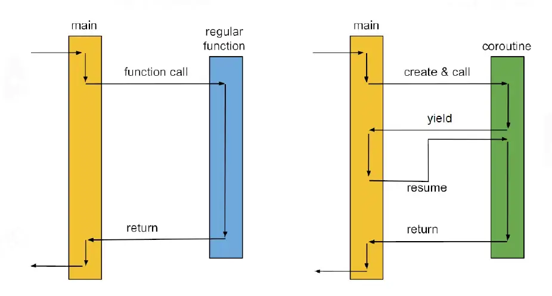
Coroutine vs. Thread
{kind=link}
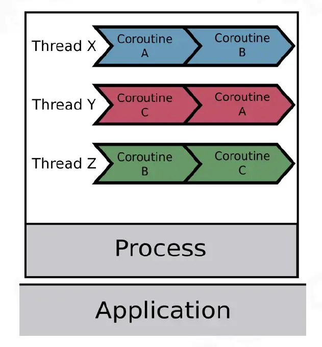
{% div subfields %}
{% div subfield %}
Coroutine
协程
-
Scheduled by programmers
由程序员安排
-
To be executed within a thread
在线程内执行
-
Context switch is faster without kernel switch
无需内核切换，上下文切换速度更快
{% enddiv %}
{% div subfield %}
Thread
线程
-
Scheduled by operating system
按操作系统计划
-
Resides in a process
过程中的残留物
-
Context switch is costly with kernel switch
内核切换的上下文切换成本很高
{% enddiv %}
{% enddiv %}
Stackful Coroutine
堆叠式协程
Coroutine owns an independent runtime stack which is reserved after yield
Coroutine 拥有一个独立的运行时堆栈，该堆栈在 yield 后保留
-
Enable to yield from within a nested stackframe
允许在嵌套的堆栈框架内屈服
-
Use local variables just like normal functions
像普通函数一样使用局部变量
{kind=link}
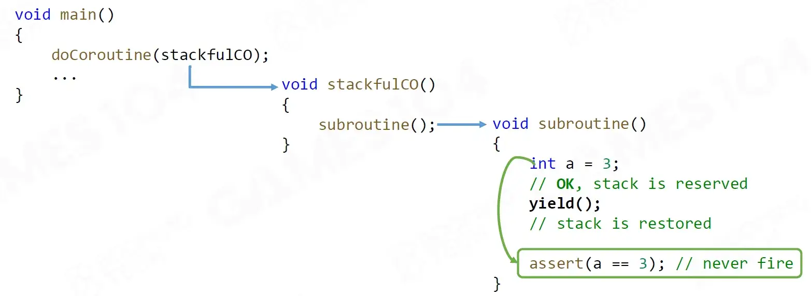
在 C++ 中，
yield()通常用于多线程编程中，来让出当前线程的执行权。具体来说，它的作用取决于你使用的线程库或框架。以下是几种常见的使用情况：
std::this_thread::yield()（在 C++11 及以后的版本中）：
这是 C++ 标准库中的一个函数，声明在
<thread>头文件中。
std::this_thread::yield()使当前线程暂停执行，并允许其他同等优先级的线程有机会运行。它通常用于在多线程环境中优化资源使用，尤其是在忙等待的情况下。示例代码：
cppCopy Code#include <iostream> #include <thread> void worker() { for (int i = 0; i < 10; ++i) { std::cout << "Working...\n"; std::this_thread::yield(); // 让出线程执行权 } } int main() { std::thread t(worker); t.join(); return 0; }
std::experimental::coroutine_handle::yield_value()（在 C++20 协程中）：
- 在 C++20 中，协程引入了更复杂的机制，如
std::experimental::coroutine_handle::yield_value()，用于协程的挂起和恢复。- 这允许在协程中挂起执行，并在之后恢复，提供了更高级的控制流功能。
在使用
yield()时，需要注意它不会阻塞当前线程，而只是提示调度器当前线程愿意暂停执行。调度器将决定是否实际暂停当前线程以及何时恢复它。yield()是一种建议，具体的调度行为取决于底层操作系统的线程调度策略。总的来说，
yield()用于提高多线程程序的效率，避免在某些情况下导致不必要的资源占用或提高线程的响应性。
Stackless Coroutine
无堆栈协程
Coroutine has no independent runtime stack to be reserved when yield
Coroutine 在 yield 时没有要保留的独立运行时堆栈
-
Only the top-levelroutine may yield (subroutines have no idea where to return without stack)
只有顶层例程可能会产生结果（子程序不知道在没有堆栈的情况下返回哪里）
-
The data that is required to resume execution should be stored separately from the stack
恢复执行所需的数据应与堆栈分开存储
{kind=link}
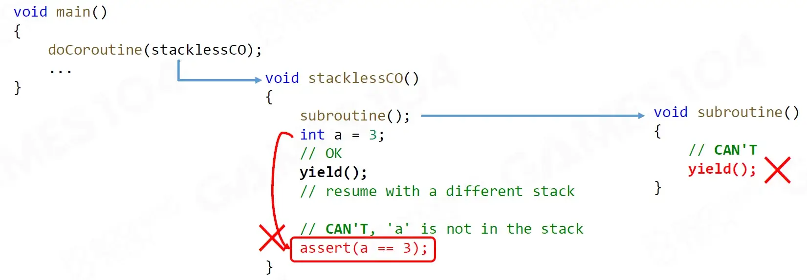
Stackful vs. Stackless Coroutine
堆叠式与无堆叠式协程
{% div subfields %}
{% div subfield %}
Stackful Coroutine
堆叠式协程
-
More powerful with enable to yield from within a nested stackframe
更强大，支持从嵌套堆栈框架中屈服
-
Needs more memory to reserve stacks for each coroutine
需要更多内存为每个协程保留堆栈
-
Coroutine context switch takes more time
子程序上下文切换需要更多时间
{% enddiv %}
{% div subfield %}
Stackless Coroutine
无堆栈协程
-
Unable to yield from within a subroutine
无法从子例程中屈服
-
More difficult to use without a stack to reserve data
如果没有堆栈来保留数据，则更难使用
-
No extra memory needed for coroutine's stack
协程堆栈不需要额外的内存
-
Faster context switch
更快的上下文切换
{% enddiv %}
{% enddiv %}
Fiber-based Job System
基于光纤的任务系统
Allows for multitasking by creating jobs instead of threads
通过创建任务而不是线程来实现多任务处理
-
Fiber is like coroutine except that fiber is scheduled by a scheduler
光纤类似于协程，只是光纤是由调度器调度的
-
Thread is the execution unit while fiber is the context
线程是执行单元，光纤是上下文
-
One thread for each processor core to minimize the context switch overhead
每个处理器核心一个线程，以最大限度地减少上下文切换开销
-
-
Job is executed within the context of a fiber
任务在光纤上下文中执行
{kind=link}
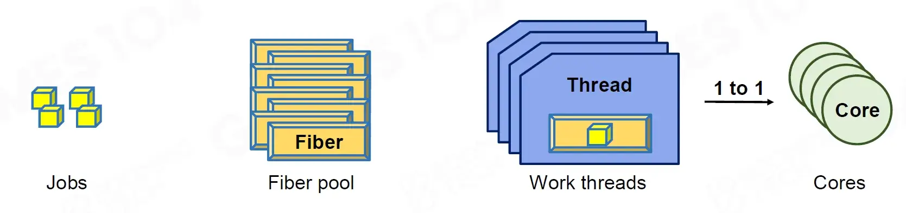
One Work Thread for One Core
一个核心对应一个工作线程
To minimize the overhead of thread context switch
尽量减少线程上下文切换的开销
-
Multiple work threads for a single core still suffers from context switch
单个核心的多个工作线程仍然受到上下文切换的影响
-
One work thread for each core eliminates context switch
每个核心都有一个工作线程，消除了上下文切换
{kind=link}
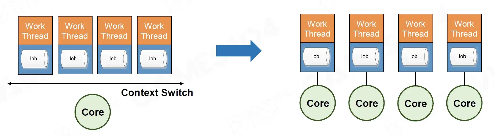
Fiber-based Job System
基于光纤的任务系统
-
Thread is the execution unit while fiber is the context
线程是执行单元，光纤是上下文
-
Job is executed within a fiber
任务在光纤内执行
{kind=link}
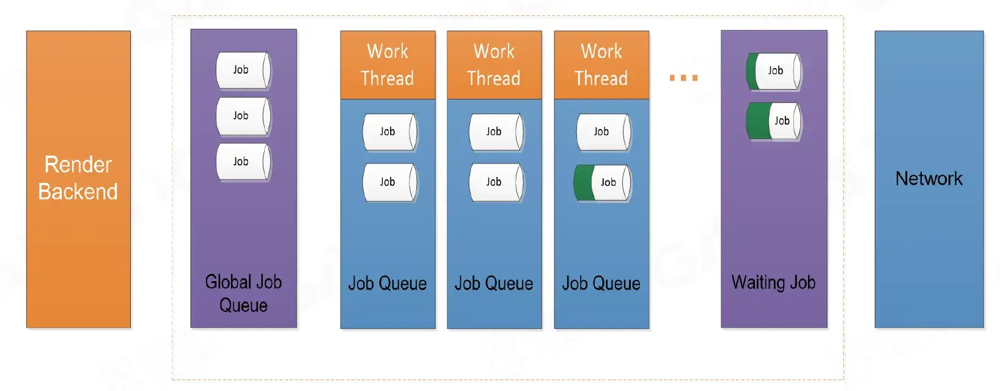
Job Scheduler -Global Job
LIFO and FIFO Mode
LIFO 和 FIFO 模式
-
Schedule Model
计划模型
-
First In First Out (FIFO)
先进先出（FIFO）
-
Last In First Out (LIFO)
后进先出（LIFO）
-
-
LIFO Mode
-
In most case, job dependency is tree like
在大多数情况下，工作依赖性是树状的
-
Some system add jobs occasionally but wait them immediately
有些系统偶尔会添加任务，但会立即等待
-
Job Scheduler -Job Dependency
Job Scheduler -Job Stealing
Pros and Cons of Job System
{% div subfields %}
{% div subfield %}
Pros
-
Easy to implement task schedule
易于实施的任务计划
-
Easy to handle task dependency
易于处理任务依赖关系
-
Job stack is isolated
任务堆栈是隔离的
-
Avoid frequency context switch
避免频率上下文切换
{% enddiv %}
{% div subfield %}
Cons
-
C++ does not natively support fiber
C++ 本身不支持光纤
-
Implementation is different between OS
操作系统之间的实现不同
-
Has some restrictions (thread_local invalid)
有一些限制（thread_local 无效）
{% enddiv %}
{% enddiv %}
Programming Paradigms
编程范式
Procedure-oriented Programming
面向过程的程序设计
Object-oriented Programming
面向对象程序设计
Programming Paradigm of Game Engine
游戏引擎的编程范式
-
There are many different programming paradigms
有许多不同的编程范式
-
Inpractice, some paradigms are widely used
在实践中，一些范式被广泛使用
-
Programming languages aren't always tied to a specific paradigm
编程语言并不总是与特定的范式联系在一起
{kind=link}
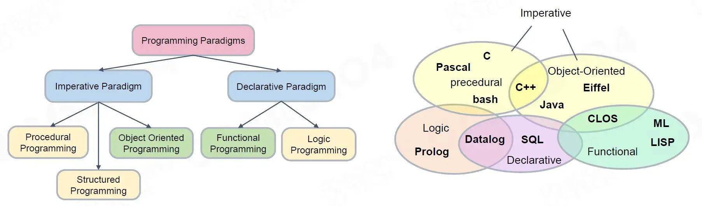
Procedural Oriented Programming (POP)
面向过程编程（POP）
-
Follows a step-by-step approach to break down a task into a collection of variables and routines (or subroutines) through a sequence of instructions
遵循循序渐进的方法，通过一系列指令将任务分解为变量和例程（或子程序）的集合
-
Impossible to write a game engine in this way
无法以这种方式编写游戏引擎
-
Data is not well maintained.
数据没有得到很好的维护。
-
A co-relation with real-world objects is difficult
与现实世界中的物体建立关联是困难的
-
Object-Oriented Programming (OOP)
面向对象程序设计（OOP）
-
Based on the concept of "objects", which can contain data and code
基于“对象”的概念，可以包含数据和代码
-
It's natural for human to abstract from real world in an object-oriented way
人类以面向对象的方式从现实世界中抽象出来是很自然的
{kind=link}
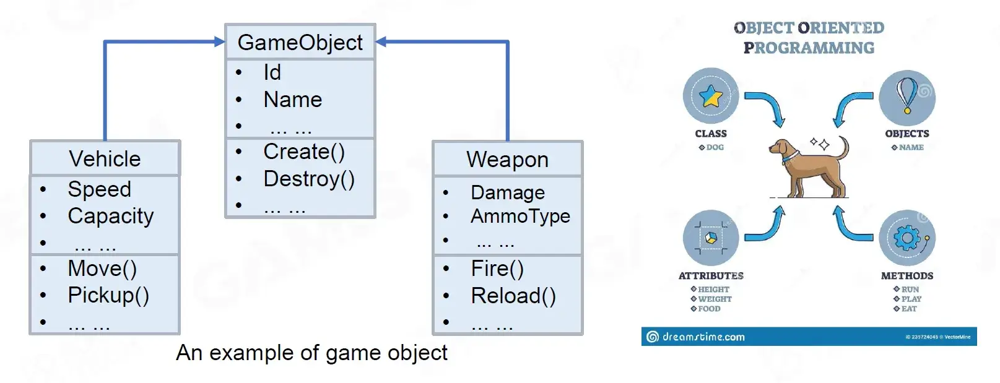
Problems of OOP : Where to Put Codes?
面向对象编程的问题：把代码放在哪里？
{kind=link}
当攻击者击中对象时，是执行 Attacker.doDamageTo() 还是 Victim.receiveDamage()？
当玩家接触敌人时，是执行 Player.attachTo() 还是 Enemy.isAttached()？
Problems of OOP：Method Scattering in Inheritance Tree
面向对象程序的问题：继承树中的方法分散
-
Hard to know which parent class has the method implementation
很难知道哪个父类有方法实现
{kind=link}
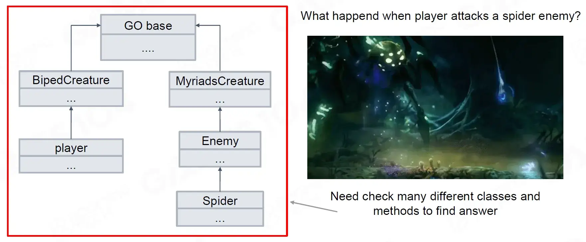
为了找到玩家攻击敌人的代码逻辑，有可能从继承树中套好几层才找到代码。
Problems of OOP : Messy Based Class
面向对象编程的问题：基于混乱的类
classENGINE_API AActor: publicUObject
{
...
constFTransform&GetTransform() const;
constFTransform&ActorToWorld() const;
FVectorGetActorForwardVector() const;
FVectorGetActorUpVector() const;
FVectorGetActorRightVector() const;
virtualvoidGetActorBounds(...) const;
virtualFVectorGetVelocity() const;
floatGetDistanceTo(constAActor*OtherActor) const;
virtualvoidSetActorHiddenInGame(boolbNewHidden);
boolGetActorEnableCollision() const;
boolHasAuthority() const;
UActorComponent*AddComponent(...);
voidAttachToActor(...);
voidDetachFromActor(constFDetachmentTransformRules&DetachmentRules);
boolGetTickableWhenPaused();
boolIsActorInitialized() const;
voidReceiveAnyDamage(...);
voidGetOverlappingActors(...) const;
virtualvoidSetLifeSpan(floatInLifespan);
virtualvoidSerialize(FArchive&Ar) override;
virtualvoidPostLoad() override;
...
}Parts of methods of a "messy base class"
“混乱的基层”的部分方法（代码可读性差）
Find some methods in common? Put it to the base class! → We get a messy base class
找到一些共同的方法吗？把它放在基层阶级！→ 我们得到了一个混乱的基础阶级
This is not the best OO design, and it certainly is possible to make a better one. But also, often code ends up being like this, even if no one wanted it that way.
这不是最好的 OO 设计，当然有可能做出更好的 OO 设计。 但是，即使没有人希望这样，代码最终也往往是这样的。
Problems of OOP : Performance
面向对象编程的问题：性能
-
Memory scattering
记忆散射
-
Jungle of virtual functions
虚拟功能丛林
{kind=link}
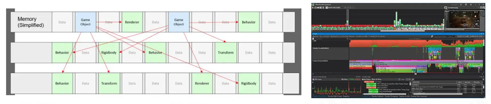
面向对象编程可能导致运行时地址分散，Cache 命中率低，性能差。
Problems of OOP : Testability
面向对象编程的问题：可测试性
-
Unit Testing
单元测试
-
OO designs often need a lot of setup to test
OO 设计通常需要大量的设置来测试
-
{kind=link}
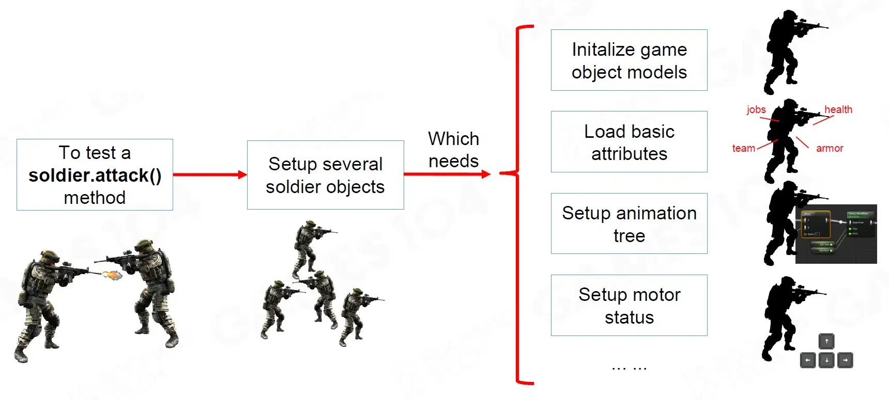
Data-Oriented Programming (DOP)
面向数据编程（DOP）
Processor-Memory Performance Gap
处理器内存性能差距
-
Performance of memory grows much slowly than processor
内存的性能增长速度比处理器慢
-
The gap is even larger which make memory becomes the main bottleneck of performance CPU
差距更大，使内存成为性能 CPU 的主要瓶颈
{kind=link}
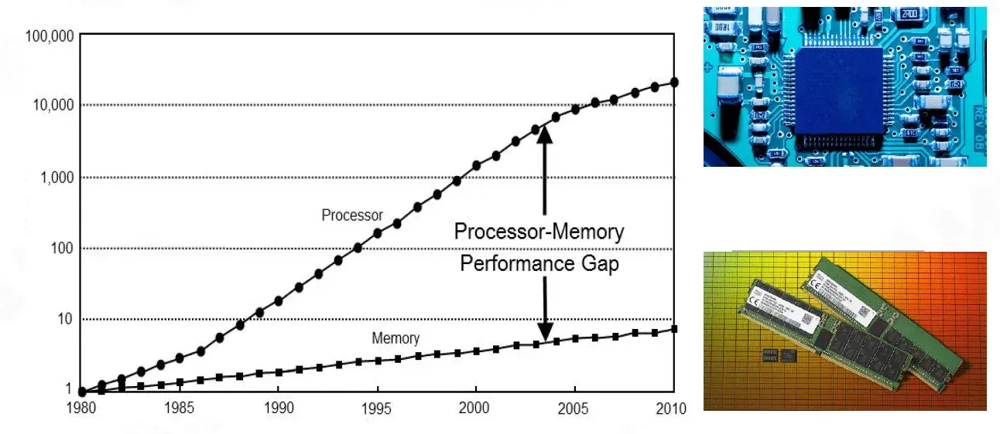
The Evolution of Memory -Cache
内存缓存的演变
Add cache to speed up data reading
添加缓存以加快数据读取速度
-
L1: Ranges between 256KB to no more than 1MB, but even that is sufficient.
L1：范围在 256KB 到不超过 1MB 之间，但即使这样也足够了。
-
L2: Usually a few megabytes and can go up to 10MB.
L2：通常为几兆字节，最高可达 10MB。
-
L3: Larger than L1 and L2, varies from 16MB to 64MB, shared between all cores.
L3：大于 L1 和 L2，大小从 16MB 到 64MB 不等，在所有内核之间共享。
{kind=link}
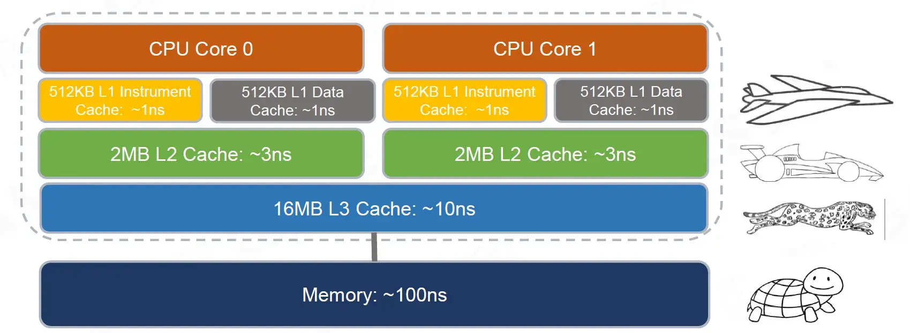
Principle of Locality
地方性原则
the tendency of a processor to access the same set of memory locations repetitively over a short period of time
处理器在短时间内重复访问同一组存储位置的趋势
Spatial Locality
空间位置
-
The use of data elements within relatively close storage locations
在相对较近的存储位置内使用数据元素
{kind=link}
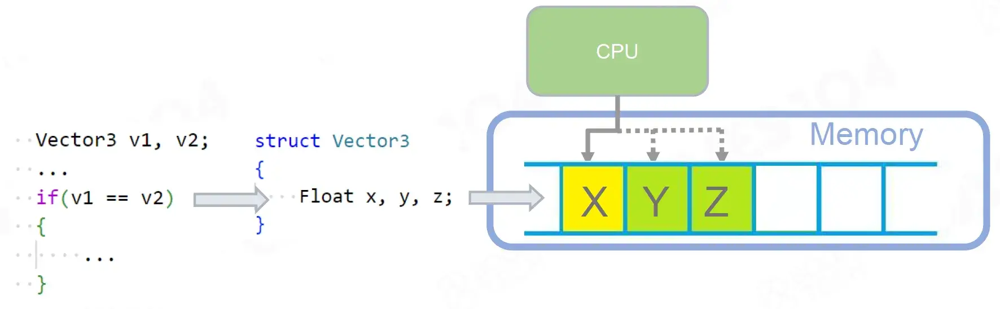
Single instruction multiple data (SIMD)
单指令多数据（SIMD）
{kind=link}
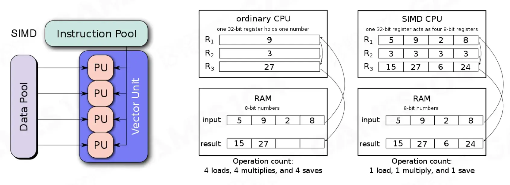
LRU (Least Recently Used)
LRU（最近最少使用）
-
When cache is full, discards the least recently usedcache-linefirst.
当缓存已满时，首先丢弃最近最少使用的缓存行。
-
Record the "used time" of each cache line
记录每个缓存行的“使用时间”
-
Discard the most "oldest used" cache lineeach time
每次丢弃“最旧的已使用”缓存行
-
Update "used time" when access data of cache line
访问缓存行数据时更新“已用时间”
-
{kind=link}
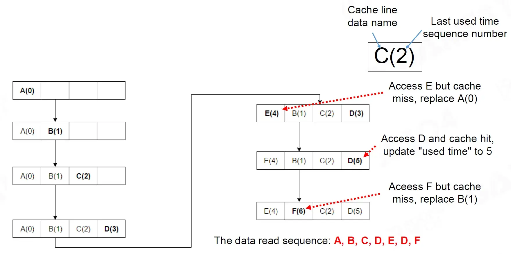
Cache Line
缓存行
-
Data is transferred between memory and cache inblocks of fixed size (typically 64 bytes), called cache lines or cache blocks.
数据在固定大小（通常为 64 字节）的内存和缓存块之间传输，称为缓存行或缓存块。
-
A cache can only hold a limited number of lines, determined by the cache size. For example, a 64 kilobyte cache with 64-byte lines has 1024 cache lines.
缓存只能容纳有限数量的行，由缓存大小决定。例如，具有 64 字节行的 64KB 缓存有 1024 条缓存行。
-
Every time you load any memory at all, you are loading in a full cache line of bytes
每次加载任何内存时，都会加载一个完整的字节缓存行
Cache Miss
未命中缓存
{kind=link}
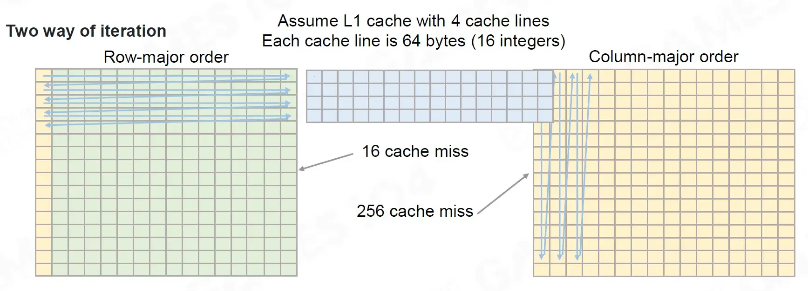
-
When cahce is full (loaded 4 rows), new rows will replace the oldest one
当 cahce 已满（加载 4 行）时，新行将替换最旧的行
-
When a elements not in cache, a whole row will be loaded
当一个元素不在缓存中时，将加载整行
Data-Oriented Programming (DOP)
面向数据编程（DOP）
1. Datais all we have
我们只有数据
{kind=link}
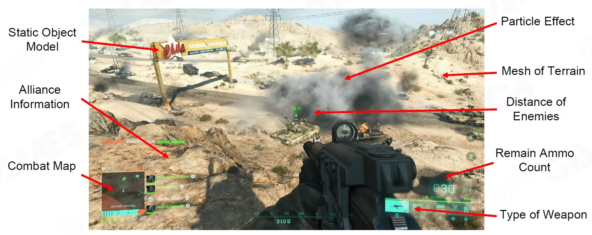
示例：假设你正在开发一个游戏，并需要处理大量的游戏实体（例如玩家、敌人、NPC 等）。
在面向对象编程（OOP）中，你可能会为每种实体创建一个类，并将属性和方法打包在一起：
python pythonCopy Codeclass Player: def __init__(self, x, y): self.x = x self.y = y def move(self, dx, dy): self.x += dx self.y += dy而在面向数据编程（DOP）中，你会将实体的属性分开存储，并编写独立的函数来操作这些属性：
python pythonCopy Code # 使用列表存储所有玩家的位置数据 player_positions = [(0, 0), (5, 5), (10, 10)] def move_player(index, dx, dy): x, y = player_positions[index] player_positions[index] = (x + dx, y + dy) # 移动第一个玩家 move_player(0, 1, 1)在这个例子中，
player_positions列表存储所有玩家的位置数据。move_player函数则直接操作这些数据，不涉及复杂的对象方法。这种方式可以提高性能，尤其是在处理大量数据时，因为它减少了对象的开销，并且更容易进行批量操作和并行处理。
Instructions are Data Too
指令也是数据
{kind=link}
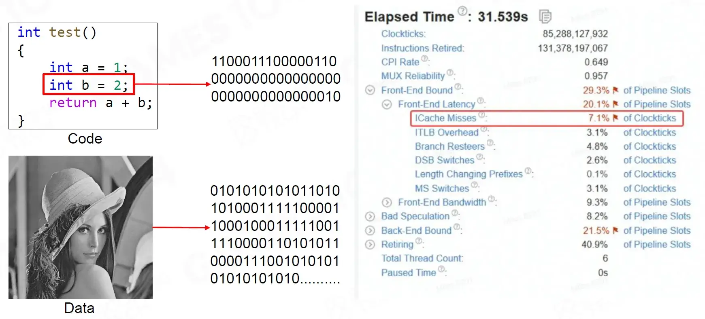
Code 和 Data 都是内存中的数据。
Keep Code and Data Tight in Memory
保持代码和数据在内存中的紧密性
-
Keep both code and data small and process in bursts when you can
尽可能保持代码和数据的小规模，并以突发的方式处理
{kind=link}
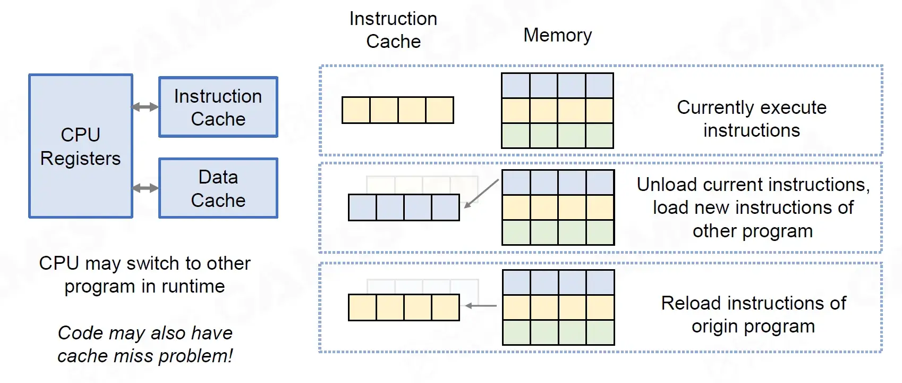
Performance-Sensitive Programming
性能敏感编程
Reducing Order Dependency
减少订单依赖
-
The work being done because of a misprediction will have to be undone
由于预测失误而完成的任务将不得不撤销
-
Never modify variables once they are initially assigned
一旦变量最初被赋值，就永远不要修改它们
{% div subfields %}
{% div subfield %}
{kind=link}
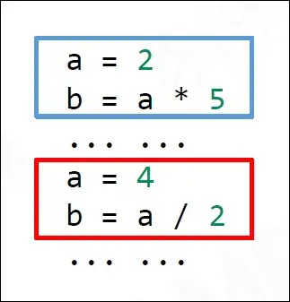
These 2 parts of code will not be excuted in parallel
这两部分代码不会并行执行
because variables a & b is used before
因为之前使用了变量 a 和 b
{% enddiv %}
{% div subfield %}
{kind=link}
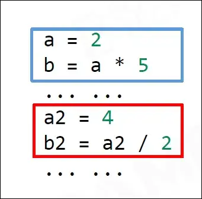
Compiler allow these 2 parts of code to execute in parallel
编译器允许这两部分代码并行执行
Actually, compiler use static single-assignment (SSA) to deal with simple situation like this
实际上，编译器使用静态单赋值（SSA）来处理这样的简单情况
{% enddiv %}
{% enddiv %}
False Sharing in Cache Line
缓存行中的错误共享
-
Ensuring any rapidly updated variables are kept local to the thread
确保任何快速更新的变量都保持在线程的本地
-
Cache contension
缓存争议
{kind=link}
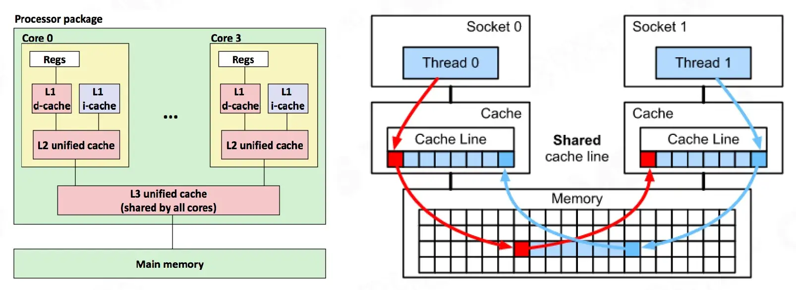
Branch prediction
分支预测
-
CPU will prefetch instructions and data ahead
CPU 将提前预取指令和数据
-
Use branch prediction technics to decide what to prefetch
使用分支预测技术来决定预取什么
{kind=link}
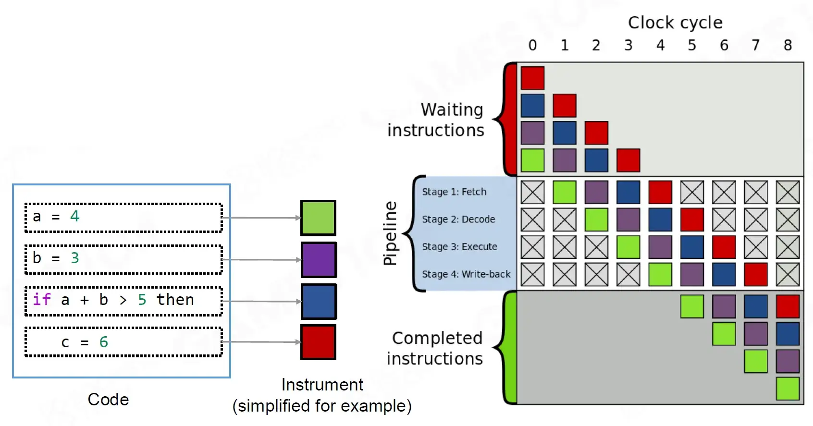
-
To avoid branch mis-prediction
避免分支预测错误
int a[10] = {2, 5, 8, 11, 3, 12, 9, 22, 5, 13};
for(int i = 0; i < 10; i++)
{
if(a[i] > 10)
{
doFunc1();
}
else
{
doFunc2();
}
}{kind=link}
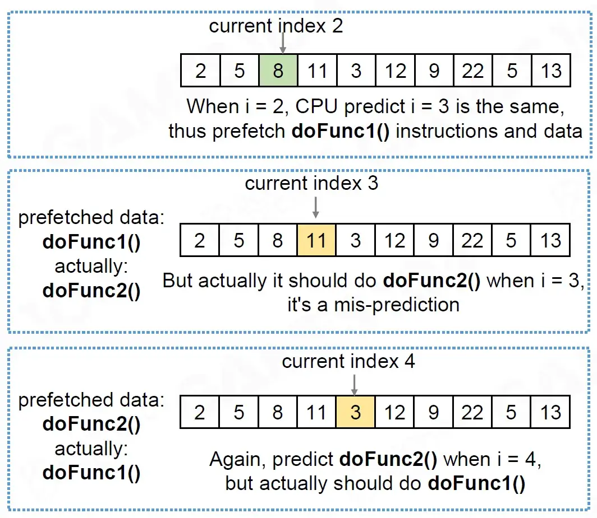
如果代码跳着执行，则 Cache 容易未命中，降低运行速度。
int a[10] = {2, 3, 5, 5, 8, 9, 11, 12, 13, 22};
for(int i = 0; i< 10; i++)
{
if(a[i] > 10)
{
doFunc1();
}
else
{
doFunc2();
}
}{kind=link}
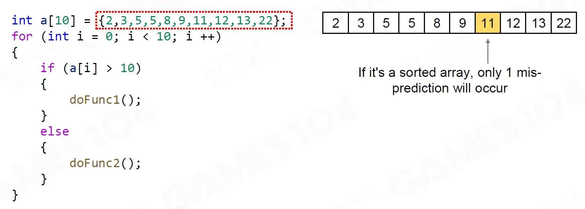
如果事先将序列排序好，代码就不会跳着执行。
Existential Processing
存在加工
{% div subfields %}
{% div subfield %}
for actor in actor_array do
if actor is alive then
aliveFunc(actor)
else
deadFunc(actor)
end
endThis code also faces branch prediction problems
此代码还面临分支预测问题
Unlike the example before, actor_array changes every tick
与前面的示例不同，actor_array 每一刻都会发生变化
{% enddiv %}
{% div subfield %}
for actor in alive_actor_array do
aliveFunc(actor)
end
for actor in dead_actor_array do
deadFunc(actor)
endCompletely avoid "if-else"
完全避免“if-else”
By maintaining 2 lists of different actors, we could avoid branch mis-precondition
通过维护 2 个不同参与者的列表，我们可以避免分支预处理错误
{% enddiv %}
{% enddiv %}
Performance-Sensitive Data Arrangements
性能敏感数据安排
Reducing Memory Dependency
减少内存依赖
- (chained memory lookups/accesses by pointers)
（通过指针进行链式内存查找 / 访问）
{kind=link}
-
Load the first cache line 1
加载第一个缓存行 1
-
Get the next node address
获取下一个节点地址
-
Cache miss
缓存未命中
-
Unload the old one, and load another cahce line 2
卸下旧的，再加载另一个 Cache 线 2
-
Repeating
重复
Array of Structure vs. Structure of Array
数组的结构与结构的数组
{% div subfields %}
{% div subfield %}
{kind=link}
{% enddiv %}
{% div subfield %}
{kind=link}
{% enddiv %}
{% enddiv %}
SOA 的地址排列要比 AOS 更连续。
If we want to read the position of all particles, SOA has better performance
如果我们想读取所有 particles 的位置，SOA 的性能更好。
Entity Component System (ECS)
实体组件系统（ECS）
Recap: Component-based Design
回顾：基于组件的设计
{kind=link}
-
Code example
代码示例
{kind=link}
Entity Component System (ECS)
实体组件系统（ECS）
A pattern to structure game code in a data-oriented way for maximum performance
一种以面向数据的方式构建游戏代码以获得最大性能的模式
-
Entity: an ID refer to a set of components
实体：ID 指一组组件
-
Component: the data to be processed by systems, no logic at all
组件：系统要处理的数据，根本没有逻辑
-
System: where the logic happens, read/write component data
系统：逻辑发生的地方，读/写组件数据
{kind=link}
Unity Data-Oriented Tech Stack (DOTS)
面向 Unity 数据的技术栈（DOTS）
A combination of technologies that work together to deliver a data-oriented approach to coding
结合多种技术，共同提供面向数据的编码方法
-
The Entity Component System (ECS) provides data-oriented programming framework
**实体组件系统（ECS）**提供面向数据的编程框架
-
The C# Job System provides a simple method of generating multithreaded code
C# 任务系统提供了一种生成多线程代码的简单方法
-
The Burst Compiler generates fast and optimized native code
Burst 编译器生成快速且优化的本机代码
{kind=link}
Unity ECS – Archetype
A specific combination of components
Archetype 是组件的特定组合
-
Entities are grouped into archetypes
实体被分组到 archetype 中
{kind=link}
Unity ECS –Data Layout in Archetype
Unity ECS——Archetype 中的数据布局
Same components in an archetype are packed tightly into chunks for cache friendliness
原型中的相同组件被紧密地打包成块，以便于缓存
-
A chunk is a block of memory with fixed size, i.e. 16KB
块是固定大小的内存块，即 16KB
{kind=link}
Unity ECS –System
Unity ECS——系统
{kind=link}
public class MoveSystem: SystemBase
{
protected override void OnUpdate()
{
// For each entity which has Translation and Velocity
Entities.ForEach(
// Write to Displacement (ref), read Velocity (in)
(refTranslationtrans, inVelocityvelocity) =>
{
// Execute for each selected entity
trans = newTranslation()
{
// dT is a captured variable
Value = trans.Value + velocity.Value * dT};
}
).ScheduleParallel(); // Schedule as a parallel job
}
}Unity C# Job System
Unity C# 任务系统
Make it easier forusers to write correct multithreaded code
使用户更容易编写正确的多线程代码
-
A job is a small unit of work that performs a specific task
作业是执行特定任务的小工作单元
-
Jobs can depend on other jobs to complete before they run
作业在运行之前可以依赖其他作业来完成
{% div subfields %}
{% div subfield %}
public struct FirstJob: IJob
{
publicvoidExecute()
{
...
}
}
public struct SecondJob: IJob
{
public void Execute()
{
...
}
}{% enddiv %}
{% div subfield %}
varfirst_job = newFirstJob();
varsecond_job = newSecondJob();
// execute first_job
varfirst_job_handle = first_job.Schedule();
// second_job depends on first_job to complete
second_job.Schedule(first_job_handle);{% enddiv %}
{% enddiv %}
Unity C# Job System–Native Container
Unity C# 作业系统——原生容器
A type of shared memory that can be accessed inside jobs
一种可以在作业内部访问的共享内存
-
Job cannot output result without native container (all data is a copy)
没有本机容器，作业无法输出结果（所有数据都是副本）
-
Native containers support all safety checks
本地容器支持所有安全检查
-
Native containers need to be disposed manually
本地容器需要手动处理
// Allocate one float with "TempJob" policy
// Allocator.Temp: Fastest allocation, lifespan is 1 frame or fewer
// Allocator.TempJob: Slower than Temp, lifespan is 4 frames
// Allocator.Persistent: Slowest allocation, can last as long as needed
NativeArray<float> a= newNativeArray<float>(1, Allocator.TempJob);
...
// Need to dispose manually for unmanaged memory
a.Dispose();Unity C# Job System –Safety System
Unity C# 作业系统-安全系统
Support safety checks (out of bounds checks, deallocation checks, race condition checks) for jobs
支持作业的安全检查（越界检查、取消分配检查、竞争条件检查）
-
Send each job a copy of data it needs to operate on to eliminate the race condition
向每个作业发送一份它需要操作的数据副本，以消除竞争条件
-
Job can only access blittable data types (reference is invalid)
作业只能访问 blitable 数据类型（引用无效）
-
public struct Job: IJob
{
public float a;
public float b;
public void Execute()
{
...
}
}{kind=link}
High-Performance C# and Burst Compiler
高性能 C# 和 Burst 编译器
High-Performance C# (HPC#) is a subset of C#
高性能 C#（HPC#）是 C# 语言的一个子集
-
Give up on most of the standard library (StringFormatter, List, Dictionary, and etc.)
放弃大部分标准库（StringFormatter、List、Dictionary 等）
-
Disallow allocations, reflection, the garbage collector and virtual calls
不允许分配、反射、垃圾收集器和虚拟调用
Burst Compiler translates from IL/.NET bytecode to highly optimized native code using LLVM
Burst 编译器从 IL/ 转换而来。使用 LLVM 将 NET 字节码转换为高度优化的本机代码
-
Generate expected machine code for specific platforms
为特定平台生成预期的机器代码
{kind=link}
Unreal Mass Framework
{kind=link}
MassEntity–Entity
MassEntity–实体
-
FMassEntityHandle is pure ID as ECS Entity
FMassEntityHandle 是 ECS 实体的纯 ID
-
Index indicates the index in Entities array in FMassEntityManager
索引表示 FMassEntityManager 中实体数组中的索引
-
SerialNumberas salt to Index
序列号作为索引的盐
-
Release an old entity
释放旧实体
-
Create a new entity with the same Index
使用相同的索引创建新实体
-
SerialNumberis increased so the ID will be different
序列号增加，因此 ID 将不同
-
{% div subfields %}
{% div subfield %}
struct FMassEntityHand1e
{
...
int32 Index = 0;
int32 SerialNumber = 0;
...
}{% enddiv %}
{% div subfield %}
struct MASSENTITY_API FMassEntityManager
{
...
TChunkedArray<FEntityData> Entities;
TArray<int32> EntityFreeIndexList;
...
}{% enddiv %}
{% enddiv %}
MassEntity–Component
MassEntity——组件
-
Same as Unity, each type of entity has an Archetype
与 Unity 相同，每种类型的实体都有一个原型
-
Fragments and tagsare componentsfor entities
片段和标记是实体的组成部分
-
Tags are constant Boolean components to filter unnecessary processing
标签是用于过滤不必要处理的常量布尔组件
struct FMassArchetypeCompositionDescriptor
{
...
FMassFragmentBitSetFragments;
FMassTagBitSetTags;
FMassChunkFragmentBitSetChunkFragments;
FMassSharedFragmentBitSetSharedFragments;
}{kind=link}
MassEntity–Systems
MassEntity——系统
-
ECS Systems in MassEntity are Processor sderived from UMassProcessor
MassEntity 中的 ECS 系统是从 UMassProcessor 派生的处理器
-
Two important interface:
ConfigureQueries()andExecute(...)两个重要的接口：
ConfigureQueries（）和Execute（…）
class MASSENTITY_API UMassProcessor: publicUObject
{
...
protected:
virtual void ConfigureQueries() PURE_VIRTUAL(UMassProcessor::ConfigureQueries);
virtual void PostInitProperties() override;
virtual void Execute(
FMassEntityManager&EntityManager,
FMassExecutionContext&Context) PURE_VIRTUAL(UMassProcessor::Execute);
...
}MassEntity–Fragment Query
MassEntity——片段查询
-
Interface ConfigureQueries() runs when the processor is initialized
处理器初始化时，接口
ConfigureQueries()运行 -
Use FMassEntityQuery to filter archetypes of entities meeting systems requirements
使用 FMassEntityQuery 筛选满足系统要求的实体原型
-
FMassEntityQuery caches filtered archetypes to accelerate future executions
FMassEntityQuery 缓存经过筛选的原型以加速未来的执行
{kind=link}
void UMassApplyMovementProcessor::ConfigureQueries()
{
EntityQuery.AddRequirement<FMassVelocityFragment>(EMassFragmentAccess::ReadWrite);
EntityQuery.AddRequirement<FTransformFragment>(EMassFragmentAccess::ReadWrite);
EntityQuery.AddRequirement<FMassForceFragment>(EMassFragmentAccess::ReadWrite);
EntityQuery.AddTagRequirement<FMassOffLODTag>(EMassFragmentPresence::None);
EntityQuery.AddConstSharedRequirement<FMassMovementParameters>(EMassFragmentPresence::All);
}MassEntity–Execute
MassEntity——执行
{kind=link}
Conclusions
结论
Everything You Need Know About Performance
关于性能，你需要知道的一切
{kind=link}
这张图展示了 CPU 各种操作所耗的时间。
References
Cache
- Entity Component Systems & Data Oriented Design, Unity Training Academy 2018-2019, #3 https://aras-p.info/texts/files/2018Academy%20-%20ECS-DoD.pdf
- Computer Architecture: A Quantitative Approach 5th Edition by John L. Hennessy , David A. Patterson
- What is the bandwith speed of L1,L2 and L3 Cache https://linustechtips.com/topic/34636-what-is-the-bandwith-speed-of-l1l2-and-l3-cache/
- Intel Core i9-9900K CPU Review: More Cores, Speed, and Higher Price https://www.overclockers.com/intel-core-i9-9900k-cpu-review-more-cores-speed-and-higher-price/
- Wikipedia -Cache replacement policieshttps://en.wikipedia.org/wiki/Cache_replacement_policies#Least_recently_used_(LRU)
Parallel Programming
-
Operating System Basics (Brian Will) https://linuxwheel.com/operating-system-basics-brian-will/
-
Parallel computing via multicore computers allow high processing capacity https://www.teldat.com/blog/parallel-computing-bit-instruction-task-level-parallelism-multicore-computers/
-
Internals of a Thread Pool https://salonegupta.wordpress.com/2017/12/28/internals-of-a-java-thread-pool/
-
CPP Reference -Atomic https://en.cppreference.com/w/cpp/atomic
-
TBB Tutorial https://www.inf.ed.ac.uk/teaching/courses/ppls/TBBtutorial.pdf
-
Parallel Programming Models and Paradigms http://www.cse.hcmut.edu.vn/~hungnq/courses/pp/backup.2/thamkhao/Parallel%20Programming%20Paradigms.pdf
-
Parallel Paradigms and Parallel Algorithms https://pdc-support.github.io/introduction-to-mpi/05-parallel-paradigms/index.html
-
Developing Parallel Programs -A Discussion of Popular Models https://www.oracle.com/technetwork/server-storage/solarisstudio/documentation/oss-parallel-programs-170709.pdf
-
Modern Fortran: Building efficient parallel applications MEAP V13https://livebook.manning.com/book/modern-fortran/welcome/v-13/
-
Priority Inversion http://www.embeddedlinux.org.cn/rtconforembsys/5107final/LiB0101.html
-
What is a Thread in OS and what are the differences between a Process and a Thread? https://afteracademy.com/blog/what-is-a-thread-in-os-and-what-are-the-differences-between-a-process-and-a-thread
-
Understanding operating systems https://www.uow.edu.au/student/learning-co-op/technology-and-software/operating-systems/
Parallel Frameworks in Game Engine
-
GDC2015 -Parallelizing the Naughty Dog Engine Using Fibers https://www.gdcvault.com/play/1022186/Parallelizing-the-Naughty-Dog-Engine
-
GCAP 2016: Parallel Game Engine Design -Brooke Hodgman https://www.youtube.com/watch?v=JpmK0zu4Mts
-
Java -Thread Pools https://www.logicbig.com/tutorials/core-java-tutorial/java-multi-threading/thread-pools.html
-
C++20: Building a Thread-Pool With Coroutines https://blog.eiler.eu/posts/20210512/
-
Processes, threads, and coroutines https://subscription.packtpub.com/book/programming/9781788627160/1/ch01lvl1sec02/processes-threads-and-coroutines
-
UE 并发-TaskGraph 的实现和用法 https://zhuanlan.zhihu.com/p/398843895?utm_medium=social&utm_oi=1447486643037528064&utm_psn=1546525648855732224&utm_source=ZHShareTargetIDMore
-
Unreal Engine 5.0 Documentation -Tasks Systemhttps://docs.unrealengine.com/5.0/en-US/tasks-systems-in-unreal-engine/
-
UE4/UE5 的 TaskGraph https://cloud.tencent.com/developer/article/1897046
DOP
-
Programming Paradigms –Paradigm Examples for Beginners
-
GDC'cn 为实现极限性能的面向数据编程范式叶劲峰
-
Timeline of Computer History https://www.computerhistory.org/timeline/computers/
-
The Fetch and Execute Cycle: Machine Language https://math.hws.edu/javanotes-swing/c1/s1.html
-
Wikipedia-Single instruction, multiple data https://en.wikipedia.org/wiki/Single_instruction,_multiple_data
-
Linked List (Data Structure) https://devopedia.org/linked-list-data-structure
-
Sekiro: Shadows Die Twice -All Bosses [No Damage] https://www.youtube.com/watch?v=KPAvM2hcSH8
-
Ori 2 -Boss -Mora (Giant Spider) -Hard Difficulty https://www.youtube.com/watch?v=tuhrtBRLQPw
-
The Greatest Frame Loss of All Time https://www.youtube.com/watch?v=4efRYXuhVTA
-
Monster Hunter World | Great Sword Tutorial https://www.youtube.com/watch?v=X2vr8M3lQ88
-
Data-Oriented Design, Fabian R, CRC Press, 2018. https://www.dataorienteddesign.com/dodbook.pdf
-
OOP Is Dead, Long Live Data-oriented Design. NikolovS, Coherent Labs. CppCon2018. https://www.bilibili.com/video/BV1kW41117uw?p=66&vd_source=f12a5db552661d28e8507875c37983cd
-
Data-Oriented Design and C++, Acton M. Insomniac Games. CppCon2014. https://www.youtube.com/watch?v=rX0ItVEVjHc
-
Data-Oriented Design Resources: https://github.com/dbartolini/data-oriented-design
Unity DOTS
-
Getting Started with Unity DOTS https://nikolayk.medium.com/getting-started-with-unity-dots-part-1-ecs-7f963777db8e
-
Unity Manual -ParallelFor Jobs https://docs.unity3d.com/Manual/JobSystemParallelForJobs.html
-
Unity Learn -What is DOTS and why is it important https://learn.unity.com/tutorial/what-is-dots-and-why-is-it-important#
-
On DOTS: Entity Component System https://blog.unity.com/technology/on-dots-entity-component-system
-
Unite Los Angeles 2018 Keynotehttps://www.youtube.com/watch?v=alZ6wmwvck0&t=6434s
-
Building a Data-Oriented Future -Mike Acton https://www.youtube.com/watch?v=u8B3j8rqYMw
-
Getting started with Unity DOTS —Part 2: C# Job System https://nikolayk.medium.com/getting-started-with-unity-dots-part-2-c-job-system-6f316aa05437
Unreal Engine Mass Architecture
- UE5 MassEntityDocumentation, https://docs.unrealengine.com/5.0/en-US/overview-of-mass-entity-in-unreal-engine/
- UE5 的 ECS：MASS 框架（一）, quabqi, 2022, https://zhuanlan.zhihu.com/p/441773595
- UE5 的 ECS：MASS 框架（二）quabqi, 2022, https://zhuanlan.zhihu.com/p/446937133
- UE5 的 ECS：MASS 框架（三）, quabqi, 2022, https://zhuanlan.zhihu.com/p/477803528
Multimedia Material List
- Sekiro: Shadows Die Twice -All Bosses [No Damage] https://www.youtube.com/watch?v=KPAvM2hcSH8
- Ori 2 -Boss -Mora (Giant Spider) -Hard Difficulty https://www.youtube.com/watch?v=tuhrtBRLQPw
- Monster Hunter World | Great Sword Tutorial https://www.youtube.com/watch?v=X2vr8M3lQ88
- Review in Progress: Battlefield 2042https://www.destructoid.com/review-in-progress-battlefield-2042-ps5-version/
- Infographics: Operation Costs in CPU Clock Cycles, http://ithare.com/infographics-operation-costs-in-cpu-clock-cycles/